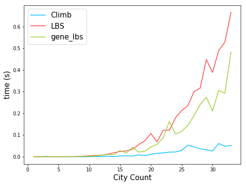
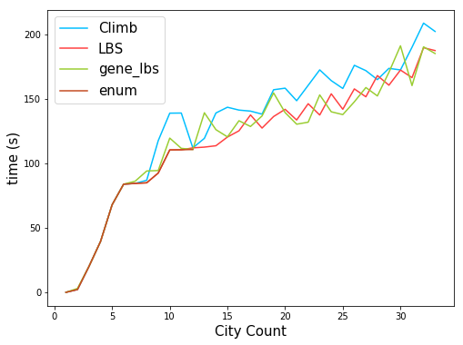

foolish fly fox's blog
foolish fly fox's blog
--Stay hungry, stay foolish.
--Forever young, forever weeping.
遗传算法计算旅行商问题
如下表所示，为一组中国城市的经纬度信息，现在要求从北京出发，旅行一圈，最后回到北京。这个过程中，同一个城市不能经过两次，两个城市之间的距离计算直接用经纬度作为坐标，求两者的欧拉距离即可：
| 编号 | 城市名 | 东经 | 北纬 | 编号 | 城市名 | 东经 | 北纬 |
|---|---|---|---|---|---|---|---|
| 1 | 北京 | 116.46 | 39.92 | 18 | 南京 | 118.78 | 32.04 |
| 2 | 天津 | 117.2 | 39.13 | 19 | 合肥 | 117.27 | 31.86 |
| 3 | 上海 | 121.48 | 31.22 | 20 | 杭州 | 120.19 | 30.26 |
| 4 | 重庆 | 106.54 | 29.59 | 21 | 福州 | 119.3 | 26.08 |
| 5 | 拉萨 | 91.11 | 29.97 | 22 | 南昌 | 115.89 | 28.68 |
| 6 | 乌鲁木齐 | 87.68 | 43.77 | 23 | 长沙 | 113 | 28.21 |
| 7 | 银川 | 106.27 | 38.47 | 24 | 武汉 | 114.31 | 30.52 |
| 8 | 呼和浩特 | 111.65 | 40.82 | 25 | 广州 | 113.23 | 23.16 |
| 9 | 南宁 | 108.33 | 22.84 | 26 | 台北 | 121.5 | 25.05 |
| 10 | 哈尔滨 | 126.63 | 45.75 | 27 | 海口 | 110.35 | 20.02 |
| 11 | 长春 | 125.35 | 43.88 | 28 | 兰州 | 103.73 | 36.03 |
| 12 | 沈阳 | 123.38 | 41.8 | 29 | 西安 | 108.95 | 34.27 |
| 13 | 石家庄 | 114.48 | 38.03 | 30 | 成都 | 104.06 | 30.67 |
| 14 | 太原 | 112.53 | 37.87 | 31 | 贵阳 | 106.71 | 26.57 |
| 15 | 西宁 | 101.74 | 36.56 | 32 | 昆明 | 102.73 | 25.04 |
| 16 | 济南 | 117 | 36.65 | 33 | 香港 | 114.1 | 22.2 |
| 17 | 郑州 | 113.6 | 34.76 | 34 | 澳门 | 113.33 | 22.13 |
暴力枚举
cities = [(116.46, 39.92),(117.2, 39.13),(121.48, 31.22),(106.54, 29.59), (91.11, 29.97),(87.68, 43.77),(106.27, 38.47),(111.65, 40.82), (108.33, 22.84),(126.63, 45.75),(125.35, 43.88),(123.38, 41.8), (114.48, 38.03),(112.53, 37.87),(101.74, 36.56),(117.0, 36.65), (113.6, 34.76),(118.78,32.04),(117.27,31.86),(120.19,30.26), (119.3,26.08),(115.89,28.68),(113.0,28.21),(114.31,30.52), (113.23,23.16),(121.5,25.05),(110.35,20.02),(103.73,36.03), (108.95,34.27),(104.06,30.67),(106.71,26.57),(102.73,25.04), (114.1,22.2),(113.33,22.13)] from itertools import permutations import math # 使用枚举方式计算路径 def enum_TSP(cities): paths = permutations(range(1, len(cities)), len(cities)-1) shortest_path = None shortest_miles = None for path in paths: cur_miles = 0 path = [0] + list(path) pre_pos = cities[path[-1]] for i in path: cur_miles += math.hypot(pre_pos[0]-cities[i][0], pre_pos[1]-cities[i][1]) pre_pos = cities[i] if shortest_miles==None or shortest_miles>cur_miles: shortest_miles = cur_miles shortest_path = path return shortest_miles, shortest_path import time pre_running = 100000 # 测试随着城市个数的增加，计算时间的变化 for i in range(1,13): t1 = time.time() miles, path = enum_TSP(cities[:i]) t2 = time.time() print("running:{:g}s x{:.3f}, miles:{}".format( t2-t1, (t2-t1)/pre_running, miles)) pre_running = t2-t1 print(path)
测试结果为：
01 CITY # running:3.60012e-05s x0.000, miles:0.0
02 CITY # running:1.09673e-05s x0.305, miles:2.164901845350049
03 CITY # running:8.82149e-06s x0.804, miles:20.120564493919822
04 CITY # running:2.21729e-05s x2.514, miles:39.42664606580856
05 CITY # running:4.91142e-05s x2.215, miles:67.77227033726385
06 CITY # running:0.000365973s x7.451, miles:83.7957265568911
07 CITY # running:0.00200295s x5.473, miles:84.38275768767652
08 CITY # running:0.0180061s x8.990, miles:84.85443680089674
09 CITY # running:0.14526s x8.067, miles:92.40225788702355
10 CITY # running:1.16235s x8.002, miles:110.34594071307717
11 CITY # running:12.7086s x10.934, miles:110.43467064772815
12 CITY # running:148.912s x11.717, miles:110.6873206900153
[0, 1, 11, 10, 9, 2, 8, 3, 4, 5, 6, 7]
可以看出，随着节点个数的增加，时间复杂度不仅仅是以指数方式增大，而是以阶乘的方式增大。其中在有 12 个节点的时候用时就达到了149 s。
爬山法解TSP问题
from itertools import combinations def climb_TSP(cities): shortest_path = [0] + random.sample(range(1, len(cities)), len(cities)-1) shortest_miles = None while True: swap_poses = combinations(range(1, len(cities)), 2) for p1, p2 in swap_poses: tp_path = shortest_path[:] tp_path[p1],tp_path[p2]=tp_path[p2],tp_path[p1] tp_miles = 0 pre_pos = cities[tp_path[-1]] for p in tp_path: tp_miles += math.hypot(pre_pos[0]-cities[p][0], pre_pos[1]-cities[p][1]) pre_pos = cities[p] if shortest_miles == None or shortest_miles>tp_miles: shortest_path = tp_path shortest_miles = tp_miles break else: break return shortest_miles, shortest_path pre_running = 100000 for i in range(1,len(cities)): t1 = time.time() miles2, path2 = climb_TSP(cities[:i]) t2 = time.time() print("running:{:g}s x{:.3f}, miles:{}".format( t2-t1, (t2-t1)/pre_running, miles2)) pre_running = t2-t1 print(path2)
结果为：
01 CITY # running:2.09808e-05s x0.000, miles:None
02 CITY # running:1.78814e-05s x0.852, miles:None
03 CITY # running:0.0017221s x96.307, miles:20.120564493919822
04 CITY # running:6.48499e-05s x0.038, miles:39.42664606580856
05 CITY # running:0.000110865s x1.710, miles:67.77227033726385
06 CITY # running:0.000103951s x0.938, miles:83.7957265568911
07 CITY # running:0.000172853s x1.663, miles:84.38275768767652
08 CITY # running:0.000295877s x1.712, miles:86.81329388311185
09 CITY # running:0.000194788s x0.658, miles:117.48644606825142
10 CITY # running:0.000561237s x2.881, miles:138.81613776560428
11 CITY # running:0.00122714s x2.186, miles:138.90486770025527
12 CITY # running:0.00112915s x0.920, miles:111.91943722100241
13 CITY # running:0.00251889s x2.231, miles:119.28734825523657
14 CITY # running:0.00112677s x0.447, miles:138.9351687014016
15 CITY # running:0.00363898s x3.230, miles:143.40710433454487
16 CITY # running:0.00422215s x1.160, miles:141.20115071627612
17 CITY # running:0.00317502s x0.752, miles:140.3956233158474
18 CITY # running:0.00864196s x2.722, miles:138.06138338625075
19 CITY # running:0.00527477s x0.610, miles:156.9575546092291
20 CITY # running:0.01158s x2.195, miles:158.180599617733
21 CITY # running:0.0158017s x1.365, miles:148.4486594113799
22 CITY # running:0.0177729s x1.125, miles:160.38397243365978
23 CITY # running:0.0214119s x1.205, miles:172.35758384201588
24 CITY # running:0.0219209s x1.024, miles:164.01914495590222
25 CITY # running:0.0298328s x1.361, miles:157.94880470955093
26 CITY # running:0.053242s x1.785, miles:175.89768884043787
27 CITY # running:0.0453973s x0.853, miles:171.76742774695765
28 CITY # running:0.0368412s x0.812, miles:164.7937952654588
29 CITY # running:0.0324101s x0.880, miles:173.53782962832412
30 CITY # running:0.0262458s x0.810, miles:172.3029374025116
31 CITY # running:0.061178s x2.331, miles:189.87633769587748
32 CITY # running:0.0482879s x0.789, miles:208.5764754571359
33 CITY # running:0.052141s x1.080, miles:202.12158656239455
[0, 15, 24, 32, 25, 20, 28, 27, 14, 5, 4, 31, 3, 29, 6, 7, 1, 9, 10, 11, 17, 2, 19,
26, 8, 30, 22, 23, 21, 18, 16, 13, 12]
虽然并不是最优的解，但是速度非常快。用枚举法解全部的34个城市的最短路径，总共有 中情况，一共大约有中情况，这要迭代非常长的时间，而使用爬山法几乎是瞬间解决。并且在测试中也能看出，耗时时间随城市个数的增多并没有明显的变化！
局部束搜索解TSP问题
为了提高准确性，可以使用局部束搜索。
局部束搜索(local beam search)算法记录k个状态而不是只记录一个。它从k个随机生成的状态开始，每一步全部k个状态的所有后继全部被生成。如果其中有一个是目标状态，算法停止，否则从整个后继列表中选择k个最佳的后继，重复该过程：
from random import sample from collections import namedtuple from itertools import combinations import math import time def local_beam_search(cities, best_n=5): class BeamNode: def __init__(self, miles, path, best): self.miles, self.path, self.best = miles, path, best def calc_miles(path): pre_pos = cities[path[-1]] tp_miles = 0 for p in path: tp_miles += math.hypot(pre_pos[0]-cities[p][0], pre_pos[1]-cities[p][1]) pre_pos = cities[p] return tp_miles beamnodes = [BeamNode(float('inf'), [0] + sample(range(1,len(cities)),len(cities)-1), False) for i in range(best_n) ] while True: if all(bn.best for bn in beamnodes): break origin_len = len(beamnodes) for bn in beamnodes[:best_n]: if bn.best: continue swap_poses = combinations(range(1, len(cities)), 2) bn.best = True for p1, p2 in swap_poses: tp_path = bn.path[:] tp_path[p1],tp_path[p2]=tp_path[p2],tp_path[p1] tp_miles = calc_miles(tp_path) if bn.miles>tp_miles: beamnodes.append(BeamNode(tp_miles, tp_path, False)) bn.best = False for i in range(origin_len-1, -1, -1): if beamnodes[i].best==False: del beamnodes[i] beamnodes.sort(key=lambda b:b.miles) for i in range(len(beamnodes)-1,0,-1): if beamnodes[i].path==beamnodes[i-1].path: del beamnodes[i] del beamnodes[best_n:] return beamnodes[0].miles, beamnodes[0].path pre_running = float('inf') for i in range(1,len(cities)): t1 = time.time() miles2, path2 = local_beam_search(cities[:i]) t2 = time.time() print("{:02} CITY # running:{:g}s x{:.3f}, miles:{}".format( i,t2-t1, (t2-t1)/pre_running, miles2)) pre_running = t2-t1 print(path2)
结果为：
01 CITY # running:0.000131845s x0.000, miles:inf
02 CITY # running:8.39233e-05s x0.637, miles:inf
03 CITY # running:0.000100851s x1.202, miles:20.120564493919822
04 CITY # running:0.000149012s x1.478, miles:39.42664606580856
05 CITY # running:0.000249863s x1.677, miles:67.77227033726385
06 CITY # running:0.000396967s x1.589, miles:83.7957265568911
07 CITY # running:0.000697136s x1.756, miles:84.38275768767652
08 CITY # running:0.00139284s x1.998, miles:84.85443680089674
09 CITY # running:0.0025003s x1.795, miles:92.40225788702355
10 CITY # running:0.00446177s x1.784, miles:110.34594071307717
11 CITY # running:0.00586319s x1.314, miles:110.43467064772817
12 CITY # running:0.00724792s x1.236, miles:111.91943722100241
13 CITY # running:0.0120242s x1.659, miles:112.50512934569768
14 CITY # running:0.0183392s x1.525, miles:113.56609907838035
15 CITY # running:0.0246849s x1.346, miles:120.31428812090877
16 CITY # running:0.026643s x1.079, miles:125.13198234267095
17 CITY # running:0.0337448s x1.267, miles:137.43478593530628
18 CITY # running:0.0557592s x1.652, miles:127.2616818070425
19 CITY # running:0.0731211s x1.311, miles:136.19308169633763
20 CITY # running:0.106837s x1.461, miles:141.79488720470593
21 CITY # running:0.0689609s x0.645, miles:133.51852009103368
22 CITY # running:0.122045s x1.770, miles:146.1424850063973
23 CITY # running:0.122695s x1.005, miles:137.37416157720375
24 CITY # running:0.180004s x1.467, miles:153.8002244978345
25 CITY # running:0.213181s x1.184, miles:141.820048214232
26 CITY # running:0.235387s x1.104, miles:157.60764815422064
27 CITY # running:0.300357s x1.276, miles:151.5022530319789
28 CITY # running:0.316988s x1.055, miles:167.93297389468225
29 CITY # running:0.448021s x1.413, miles:160.47833032590472
30 CITY # running:0.388789s x0.868, miles:172.22641594558672
31 CITY # running:0.489542s x1.259, miles:166.34471516518593
32 CITY # running:0.528914s x1.080, miles:189.50448051112315
33 CITY # running:0.665572s x1.258, miles:187.31870592623517
[0, 1, 15, 2, 19, 17, 18, 23, 22, 27, 14, 5, 4, 31, 28, 13, 12, 11, 10, 9, 7, 6, 29,
3, 30, 8, 26, 24, 32, 25, 20, 21, 16]
局部束搜索的时间复杂度也非常低。和爬山法一样，并不能保证路径最优，下面来计算一下 100 次 24城市路径规划，使用束搜索比首优爬山法更好的比例：
>>> sum(climb_TSP(cities)>=local_beam_search(cities) for i in range(100)) 77 >>> sum(climb_TSP(cities[:15])>=local_beam_search(cities[:15]) for i in range(100)) 89 >>> sum(climb_TSP(cities[:12])>=local_beam_search(cities[:12]) for i in range(100)) 88 >>> sum(climb_TSP(cities[:8])>=local_beam_search(cities[:8]) for i in range(100)) 96
可以看出，差不多有 80% 以上的概率是使用局部束搜索路径要小于等于首优爬山法。
遗传算法+局部束搜索解决TSP问题
在局部束搜索选出最优的若干个后继之后，再进行杂交，并选出其中的最优解决方案：
def genetic_lbs(cities, best_n=5): class BeamNode: def __init__(self, miles, path, best): self.miles, self.path, self.best = miles, path, best def calc_miles(path): pre_pos = cities[path[-1]] tp_miles = 0 for p in path: tp_miles += math.hypot(pre_pos[0]-cities[p][0], pre_pos[1]-cities[p][1]) pre_pos = cities[p] return tp_miles beamnodes = [BeamNode(float('inf'), [0] + sample(range(1,len(cities)),len(cities)-1), False) for i in range(best_n) ] while True: if all(bn.best for bn in beamnodes): break origin_len = len(beamnodes) for bn in beamnodes[:best_n]: if bn.best: continue swap_poses = combinations(range(1, len(cities)), 2) bn.best = True for p1, p2 in swap_poses: tp_path = bn.path[:] tp_path[p1],tp_path[p2]=tp_path[p2],tp_path[p1] tp_miles = calc_miles(tp_path) if bn.miles>tp_miles: beamnodes.append(BeamNode(tp_miles, tp_path, False)) bn.best = False for i in range(origin_len-1, -1, -1): if beamnodes[i].best==False: del beamnodes[i] beamnodes.sort(key=lambda b:b.miles) for i in range(len(beamnodes)-1,0,-1): if beamnodes[i].path==beamnodes[i-1].path: del beamnodes[i] # 添加遗传算法部分 cur_len = len(beamnodes) for i in range(cur_len): if i >= best_n:break for j in range(i+1, cur_len): if i+j>=best_n:break for k in range(best_n-i-j): # 基因交叉 cut_pos = int(random.uniform(0,1)*len(cities)) gene1 = beamnodes[i].path[:cut_pos] for c in beamnodes[j].path: if c not in gene1: gene1.append(c) gene2 = beamnodes[j].path[:cut_pos] for c in beamnodes[i].path: if c not in gene2: gene2.append(c) for gn in (gene1, gene2): beamnodes.append(BeamNode(calc_miles(gn), gn, False)) beamnodes.sort(key=lambda b:b.miles) del beamnodes[best_n:] return beamnodes[0].miles, beamnodes[0].path pre_running = float('inf') for i in range(1,len(cities)): t1 = time.time() miles2, path3 = genetic_lbs(cities[:i]) t2 = time.time() print("{:02} CITY # running:{:g}s x{:.3f}, miles:{}".format( i,t2-t1, (t2-t1)/pre_running, miles2)) pre_running = t2-t1 print(path3)
结果为：
01 CITY # running:7.70092e-05s x0.000, miles:inf
02 CITY # running:7.72476e-05s x1.003, miles:inf
03 CITY # running:0.000236034s x3.056, miles:20.120564493919822
04 CITY # running:0.000288963s x1.224, miles:39.42664606580856
05 CITY # running:0.000902891s x3.125, miles:67.77227033726385
06 CITY # running:0.000638008s x0.707, miles:83.7957265568911
07 CITY # running:0.00062108s x0.973, miles:86.09074760487061
08 CITY # running:0.000916004s x1.475, miles:93.99538523941173
09 CITY # running:0.00176096s x1.922, miles:94.36111496923868
10 CITY # running:0.00226212s x1.285, miles:119.48688915159217
11 CITY # running:0.00388813s x1.719, miles:111.54364423814188
12 CITY # running:0.00667977s x1.718, miles:110.68732069001533
13 CITY # running:0.010855s x1.625, miles:139.12310427782793
14 CITY # running:0.00950813s x0.876, miles:126.04272022825214
15 CITY # running:0.028379s x2.985, miles:120.44915681149206
16 CITY # running:0.0164061s x0.578, miles:132.938090495729
17 CITY # running:0.04386s x2.673, miles:128.48588951678107
18 CITY # running:0.0216119s x0.493, miles:136.65881442937123
19 CITY # running:0.0252399s x1.168, miles:154.52207364775006
20 CITY # running:0.044533s x1.764, miles:139.24244007981014
21 CITY # running:0.0570438s x1.281, miles:130.2661038148359
22 CITY # running:0.0877109s x1.538, miles:131.81266129344394
23 CITY # running:0.163138s x1.860, miles:152.9714314175534
24 CITY # running:0.105285s x0.645, miles:139.87220750546572
25 CITY # running:0.117091s x1.112, miles:137.70206639387885
26 CITY # running:0.144975s x1.238, miles:147.58883108921282
27 CITY # running:0.189689s x1.308, miles:158.66268651198612
28 CITY # running:0.241267s x1.272, miles:152.15471407050538
29 CITY # running:0.274257s x1.137, miles:170.46777589913202
30 CITY # running:0.211076s x0.770, miles:191.00544805184
31 CITY # running:0.306311s x1.451, miles:160.18260092406962
32 CITY # running:0.292734s x0.956, miles:190.20971445669596
33 CITY # running:0.483113s x1.650, miles:185.0191452526489
[0, 23, 21, 20, 25, 11, 10, 9, 7, 28, 3, 29, 6, 27, 14, 5, 4, 31, 30, 8, 26, 32, 24,
22, 16, 13, 12, 18, 17, 19, 2, 15, 1]
下面再测试一下解决方案的效果是否得到提高：
>>> sum(local_beam_search(cities)>=genetic_lbs(cities) for i in range(100)) 52 >>> sum(local_beam_search(cities[:15])>=genetic_lbs(cities[:15]) for i in range(100)) 33 >>> sum(local_beam_search(cities[:12])>=genetic_lbs(cities[:12]) for i in range(100)) 33 >>> sum(local_beam_search(cities[:8])>=genetic_lbs(cities[:8]) for i in range(100)) 39
在这个实例中，添加了遗传算法之后，结果居然变差了。但是，并不是说遗传算法不行，而是遗传算法不适合这个问题。
总结
T : 求解时间(s) ，Path : 路径长度
时间性能对比表
| 城市个数 | 枚举 | 爬山法 | 局部束 | 遗传局部束 |
|---|---|---|---|---|
| 01 | 0.000036 | 0.000021 | 0.000132 | 0.000077 |
| 02 | 0.000011 | 0.000018 | 0.000084 | 0.000077 |
| 03 | 0.000009 | 0.001722 | 0.000101 | 0.000236 |
| 04 | 0.000022 | 0.000065 | 0.000149 | 0.000289 |
| 05 | 0.000049 | 0.000111 | 0.000250 | 0.000903 |
| 06 | 0.000366 | 0.000104 | 0.000397 | 0.000638 |
| 07 | 0.002003 | 0.000173 | 0.000697 | 0.000621 |
| 08 | 0.018006 | 0.000296 | 0.001393 | 0.000916 |
| 09 | 0.145260 | 0.000195 | 0.002500 | 0.001761 |
| 10 | 1.162350 | 0.000561 | 0.004462 | 0.002262 |
| 11 | 12.708600 | 0.001227 | 0.005863 | 0.003888 |
| 12 | 148.912000 | 0.001129 | 0.007248 | 0.006680 |
| 13 | - | 0.002519 | 0.012024 | 0.010855 |
| 14 | - | 0.001127 | 0.018339 | 0.009508 |
| 15 | - | 0.003639 | 0.024685 | 0.028379 |
| 16 | - | 0.004222 | 0.026643 | 0.016406 |
| 17 | - | 0.003175 | 0.033745 | 0.043860 |
| 18 | - | 0.008642 | 0.055759 | 0.021612 |
| 19 | - | 0.005275 | 0.073121 | 0.025240 |
| 20 | - | 0.011580 | 0.106837 | 0.044533 |
| 21 | - | 0.015802 | 0.068961 | 0.057044 |
| 22 | - | 0.017773 | 0.122045 | 0.087711 |
| 23 | - | 0.021412 | 0.122695 | 0.163138 |
| 24 | - | 0.021921 | 0.180004 | 0.105285 |
| 25 | - | 0.029833 | 0.213181 | 0.117091 |
| 26 | - | 0.053242 | 0.235387 | 0.144975 |
| 27 | - | 0.045397 | 0.300357 | 0.189689 |
| 28 | - | 0.036841 | 0.316988 | 0.241267 |
| 29 | - | 0.032410 | 0.448021 | 0.274257 |
| 30 | - | 0.026246 | 0.388789 | 0.211076 |
| 31 | - | 0.061178 | 0.489542 | 0.306311 |
| 32 | - | 0.048288 | 0.528914 | 0.292734 |
| 33 | - | 0.052141 | 0.665572 | 0.483113 |
曲线图为：

结果对比表
| 城市个数 | 枚举 | 爬山法 | 局部束 | 遗传局部束 |
|---|---|---|---|---|
| 01 | 0.00 | 0.00 | 0.00 | 0.00 |
| 02 | 2.16 | 2.17 | 2.17 | 3.00 |
| 03 | 20.12 | 20.12 | 20.12 | 20.12 |
| 04 | 39.43 | 39.43 | 39.43 | 39.43 |
| 05 | 67.77 | 67.77 | 67.77 | 67.77 |
| 06 | 83.80 | 83.80 | 83.80 | 83.80 |
| 07 | 84.38 | 84.38 | 84.38 | 86.09 |
| 08 | 84.85 | 86.81 | 84.85 | 94.00 |
| 09 | 92.40 | 117.49 | 92.40 | 94.36 |
| 10 | 110.35 | 138.82 | 110.35 | 119.49 |
| 11 | 110.43 | 138.90 | 110.43 | 111.54 |
| 12 | 110.69 | 111.92 | 111.92 | 110.69 |
| 13 | - | 119.29 | 112.51 | 139.12 |
| 14 | - | 138.94 | 113.57 | 126.04 |
| 15 | - | 143.41 | 120.31 | 120.45 |
| 16 | - | 141.20 | 125.13 | 132.94 |
| 17 | - | 140.40 | 137.43 | 128.49 |
| 18 | - | 138.06 | 127.26 | 136.66 |
| 19 | - | 156.96 | 136.19 | 154.52 |
| 20 | - | 158.18 | 141.79 | 139.24 |
| 21 | - | 148.45 | 133.52 | 130.27 |
| 22 | - | 160.38 | 146.14 | 131.81 |
| 23 | - | 172.36 | 137.37 | 152.97 |
| 24 | - | 164.02 | 153.80 | 139.87 |
| 25 | - | 157.95 | 141.82 | 137.70 |
| 26 | - | 175.90 | 157.61 | 147.59 |
| 27 | - | 171.77 | 151.50 | 158.66 |
| 28 | - | 164.79 | 167.93 | 152.15 |
| 29 | - | 173.54 | 160.48 | 170.47 |
| 30 | - | 172.30 | 172.23 | 191.01 |
| 31 | - | 189.88 | 166.34 | 160.18 |
| 32 | - | 208.58 | 189.50 | 190.21 |
| 33 | - | 202.12 | 187.32 | 185.02 |
曲线图为：
